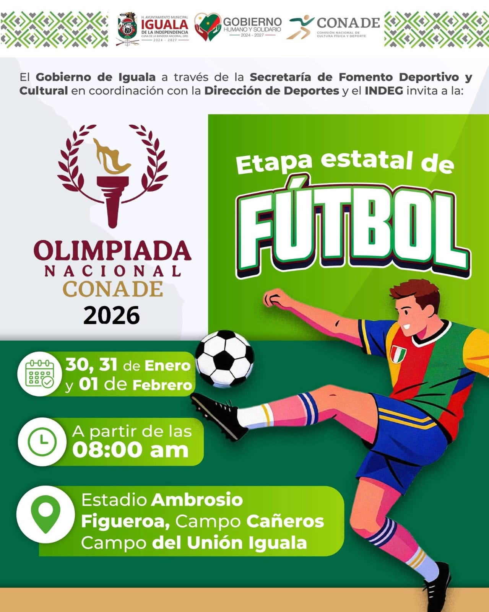
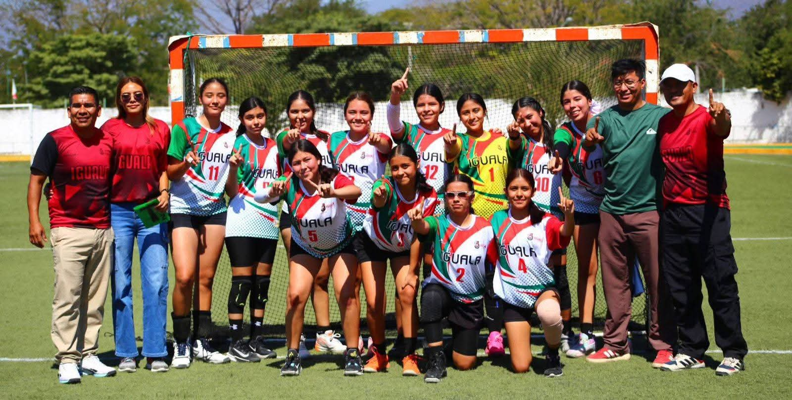
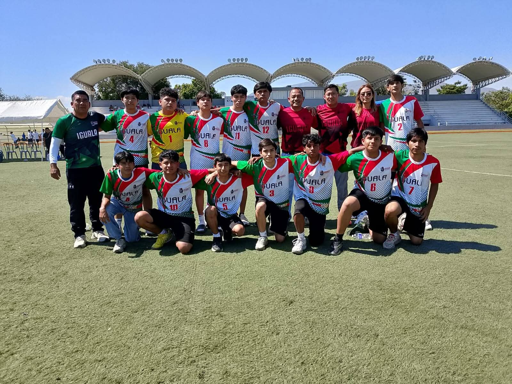
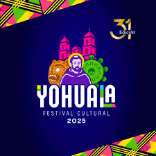
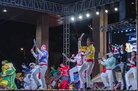
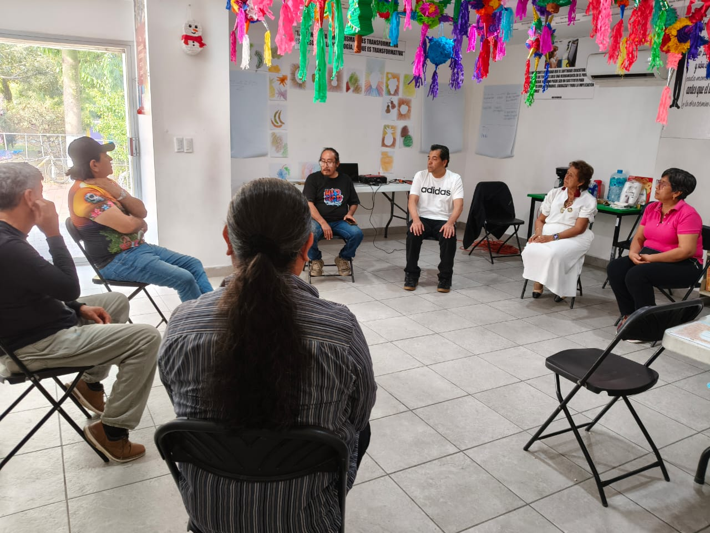
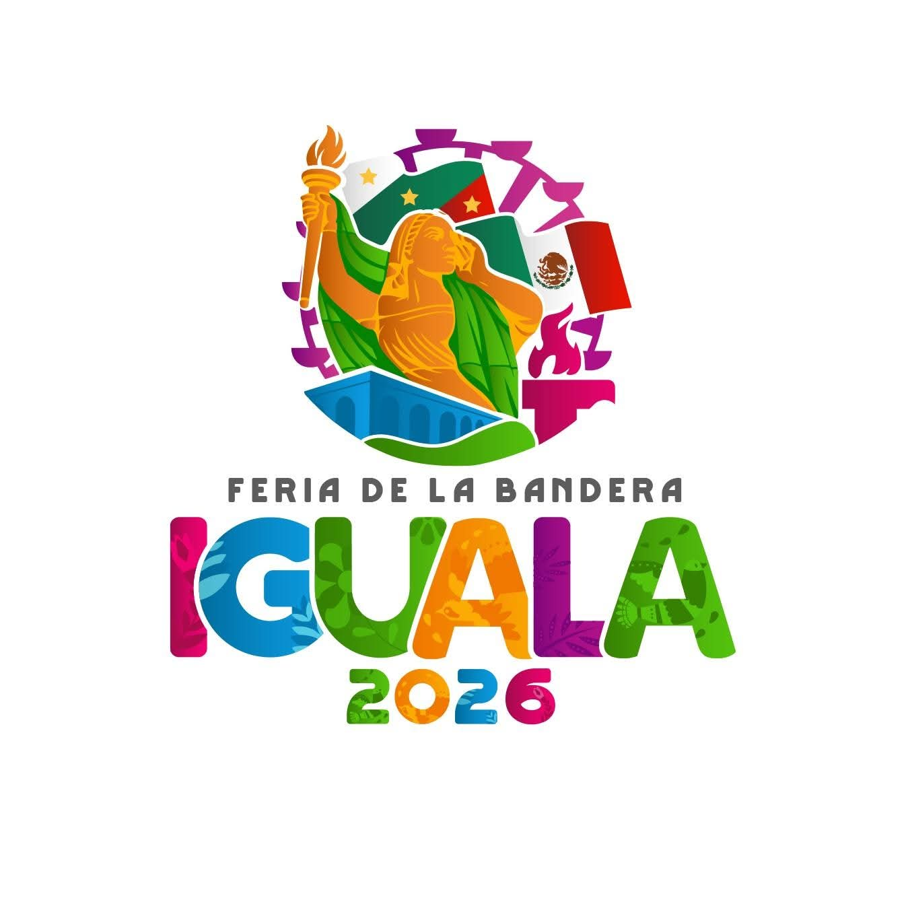
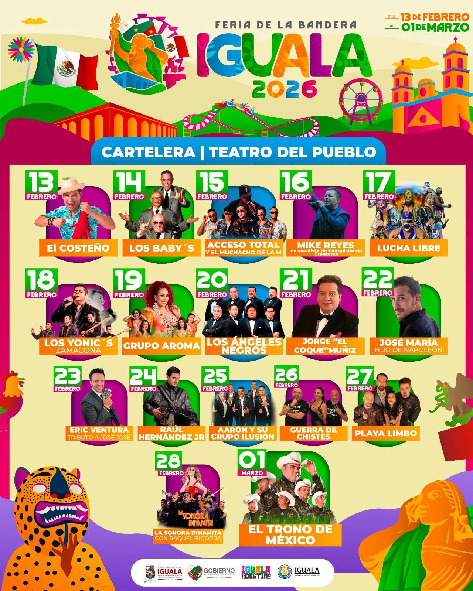
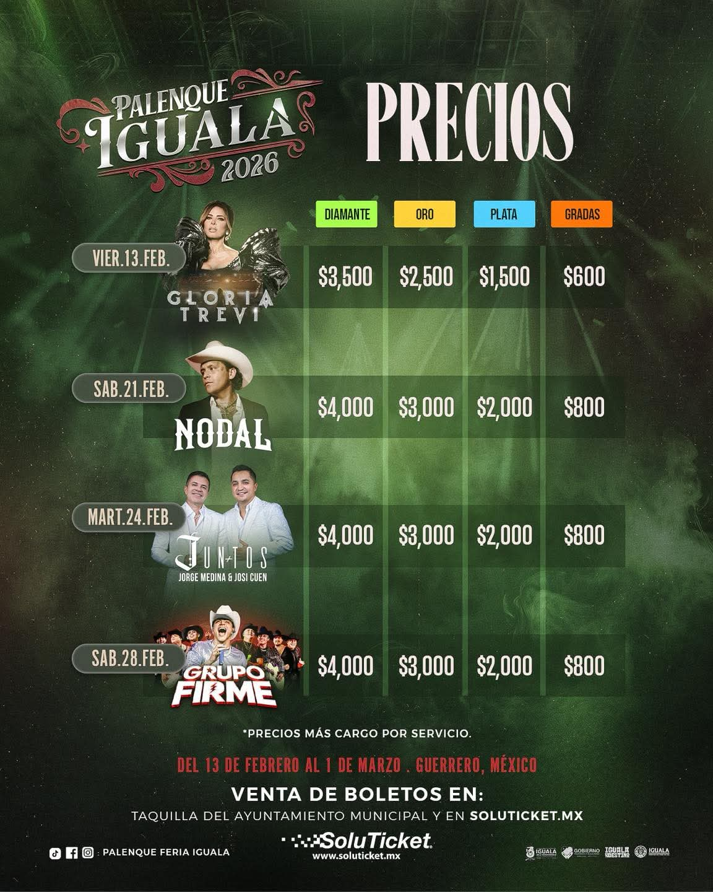

La Secretaría de Fomento Deportivo y Cultural impulsa programas permanentes orientados al fortalecimiento del desarrollo físico, artístico y social de la población igualteca.
Cada iniciativa se estructura bajo principios de inclusión, disciplina, identidad cultural y participación comunitaria, consolidando un impacto positivo en el municipio.
Se desarrollan actividades deportivas formativas y competitivas en distintas disciplinas, promoviendo estilos de vida saludables y fortaleciendo valores como el trabajo en equipo y la constancia.



A través de talleres artísticos, exposiciones, festivales y eventos culturales, se busca preservar las tradiciones locales y fomentar el talento creativo en todas las edades.



Se organizan eventos estratégicos de carácter municipal que fortalecen la convivencia social y consolidan la identidad igualteca mediante la integración comunitaria.
Cada evento representa la conmemoracion de festividades y tradiciones municipales l y generar espacios de participación ciudadana activa y responsable.

